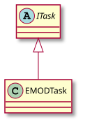

Create EMOD simulations¶
To create simulations using EMOD you must use the emodpy package included with idmtools. Included with emodpy is the emodpy.emod_task.EMODTask class, inheriting from the ITask abstract class, and used for the running and configuration of EMOD simulations and experiments.

For more information about the architecture of job (simulation/experiment) creation and how EMOD leverages idmtools plugin architecture, see Architecture and packages reference.
The following Python excerpt shows an example of using EMODTask class and from_default method to create a task object using default config, campaign, and demographic values from EMODSir class and to use the Eradication.exe from local directory:
task = EMODTask.from_default(default=EMODSir(), eradication_path=os.path.join(BIN_PATH, "Eradication"))
Another option, instead of using from_default, is to use the from_files method:
task = EMODTask.from_files(config_path=os.path.join(INPUT_PATH, "config.json"),
campaign_path=os.path.join(INPUT_PATH, "campaign.json"),
demographics_paths=os.path.join(INPUT_PATH, "demographics.json"),
eradication_path=eradication_path)
For complete examples of the above see the following Python scripts:
(from_default) emodpy.examples.create_sims_from_default_run_analyzer
(from_files) emodpy.examples.create_sims_eradication_from_github_url